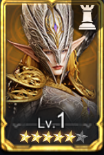
수집5.0
전설
이중 진영
발레리아
Valara

WATCHER OF REALMS · KR / EN HERO INDEX
한국 서버 영웅명과 글로벌 영문명을 검색하고 진영·희귀도·직업·콘텐츠·수집가치별로 빠르게 찾아보세요.
FACTIONS
필터로 원하는 영웅을 빠르게 찾아보세요.

Valara
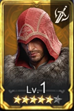
Ezio della Notte
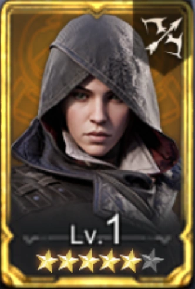
Evie Frye
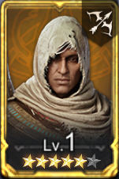
Bayek
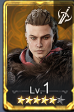
Eivor Varinsdottir
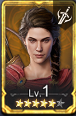
Kassandra
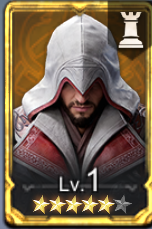
Ezio Auditore
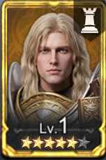
Cainan
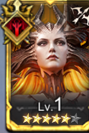
Jezebelle
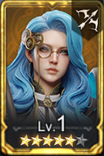
Vera
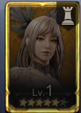
Lulu
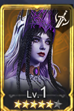
Clarissa
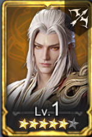
Gu Shi
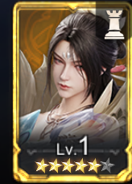
Su Yue
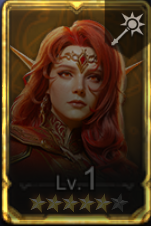
Janus Grismore
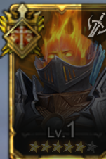
Oren
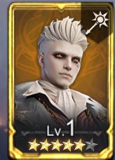
Solaris
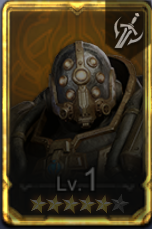
Dane
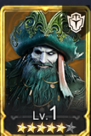
Graves Greybeard
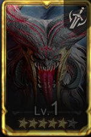
Gul'Drak
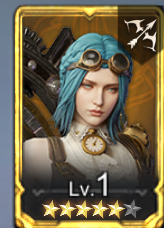
AkiraStar
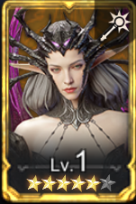
Violetta Vane
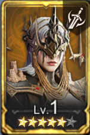
Gretchen
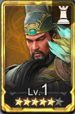
Guan Yu
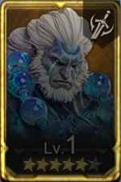
Sergei
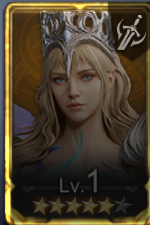
Rosalia
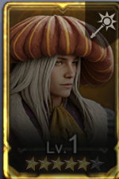
Pierre
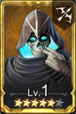
Ruen Hollow
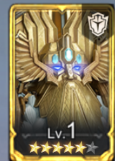
Khadgrim
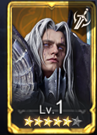
Aedrin
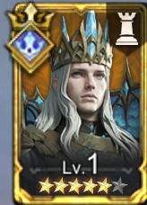
Rivenhald
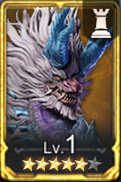
Leikan
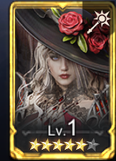
Lady Mina
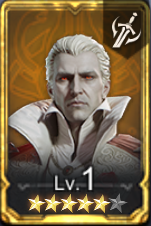
Count Dracula
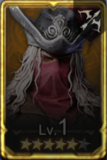
Dr. Van Helsing
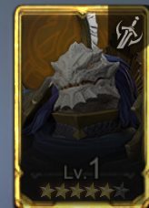
Kane
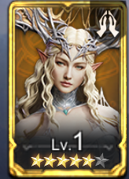
Eirlys
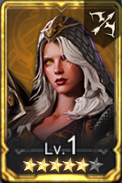
Sythra
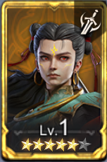
Ne Zha
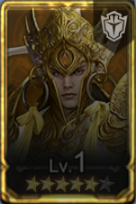
Erlang Shen
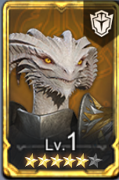
Draelyn
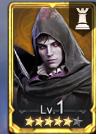
Astrael
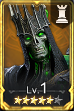
Moriden
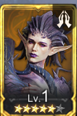
Nerissa
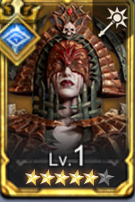
Nastya
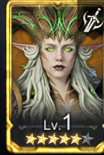
Numera
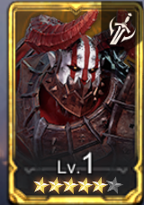
Abomination
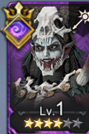
Abyss
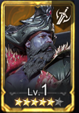
Admiral Claw
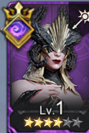
Aeon
Aeris
Ai
Ain
Ajax
Alaura
Alistair
Anai
Anora
Apsan
Aracha
Ardea
Ardeth
Ares
Arrogance
Artemis
Atrox
Aurelius Gale
Autumn
Aveline
Aylin
Azhor
Azzoth
Baron
Beatrix
Beelzebub
Boreas
Borut
Brienne
Brokkir
Brunor
Calista
Calypso
Camille
Captain Reve
Carnelian
Carosa
Cassiel
Cerberus
Constance
Corven
Crach
cutter
Cyclone
Cyrene
Cyrus
Daemon
Dagna
Dahlia
Dalyn
Dassomi
Decimus
Deimos
Demi
DiaoChan
Dolores
Drayga
Drogo
Durza
Edith
Elddr
Eliza
Elowyn
Elukas
Elysia
Eona
Esme
Estrid
Eunomia
Ezareth
Ezryn
Faelin
Falcia
Fenris
Ferssi
Filippa
Ghan
Gisele
Glacius
Gluttony
Gonkba
Greed
Gwendolyn
Harpun
Hatssut
Helga
Hex
Hollow
Idril
Imani
Ingrid
Init
Iovar
Isolde
Janqhar
Jeera
Jorge
Kaede
Kai
Kalina
Khamet
Kigiri
Kineza
King Harz
Knight Arlott
Komodo
Kria
Krodor
Lady Alexandra
Laseer
Laurel
Laya
Liam
Lightlocke
Lili
Livian
Lord Phineas
Lu Bu
Lucius
Lugaru
Luneria
Lust
Lynx
Lyra
Magda
Magmus
Malrik
Malvira
Marri
Maul
Maw
Meriel
Midan
Morene
Morrigan
Myca
Nauvras
Nazeem
Niro
Nisalt
Nissandei
Nocturne
Nyx
Olague
Orim
Osiren
Pelagios
Praetus
Pyros
Raiden
Raizan
Razaak
Regulus
Rex
Rhox
Rork
Rygar
Sadie
Salazar
Sargak
Scorch
Selene
Selkath
Serephina
Setram
Shamir
Silas
Solcadens
Soleil
Sorzus
Sun Wukong
Talin
Talula
Tazira
Thallen
Theowin
Thunkles
Titus
Torodor
Trusk
Twinfiend
Twyla
Uredin
Valderon
Valeriya
Valkyra
Vargus
Varro Draccus
Velisse
Venoma
Vierna
Vixera
Vlad Draculea
Vladov
Volka
Voltus
Vorn
Voroth
Vortex
Wrath
Xaris
Xasny
Xena
Ymiret
Yuri
Zelus
Zilitu
MOBILE APP